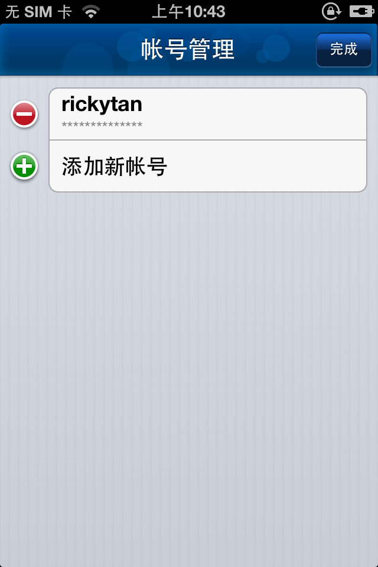

No!您看到这个页面时，弹出框已经不会再出现了。您可以点击
“帐号管理”==>“编辑”==>“＋”
以添加多个帐号（用户名不用“@a,b,c,d”），也可以点击已经添加的帐号左边的“－”来删除
在编辑状态下点击已经添加的帐号（不是“－”）可以进行修改哦！
非编辑状态下点击帐号可以设置为默认帐号，您只能有一个默认帐号
好了！“完成”返回，如果您连接了校园无线，此时它应该会自动开始认证了。
使用过程中若有什么问题或建议，请到“意见反馈”栏目告诉我们，或者邮件联系我们，感谢您的支持！
iZJU is a lifestyle!